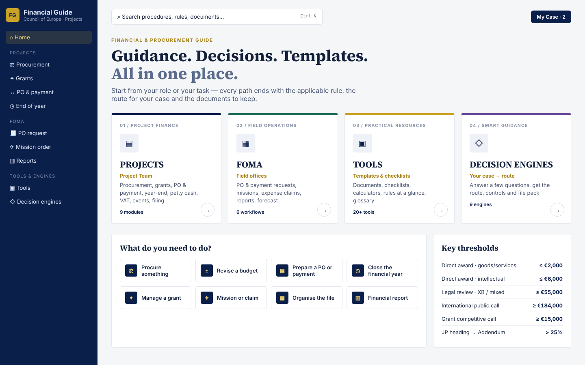
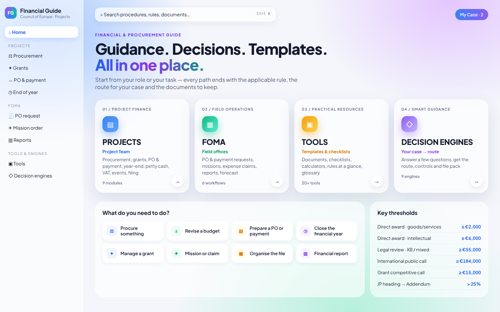
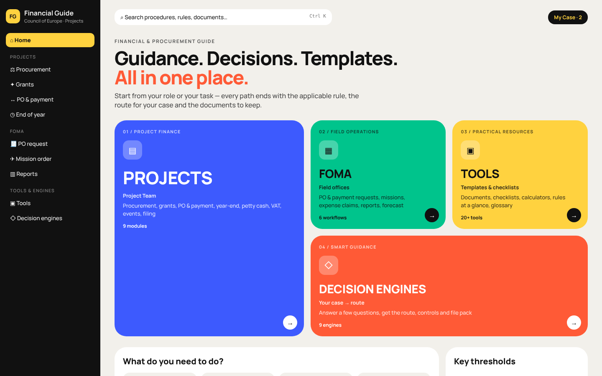
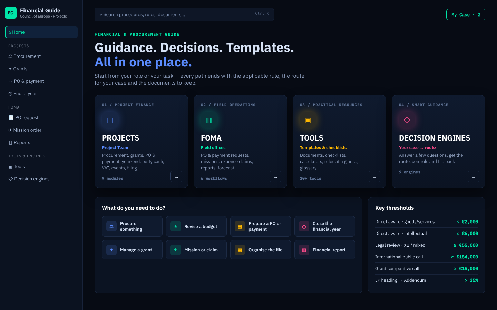
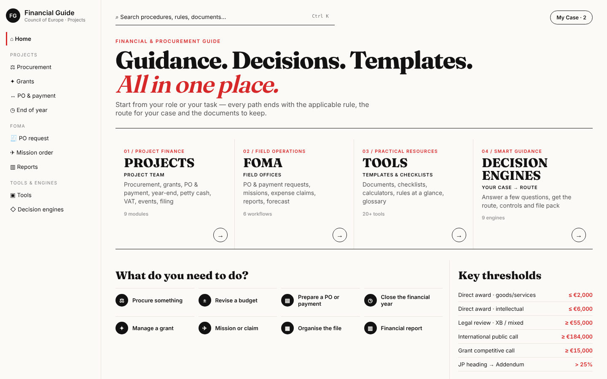
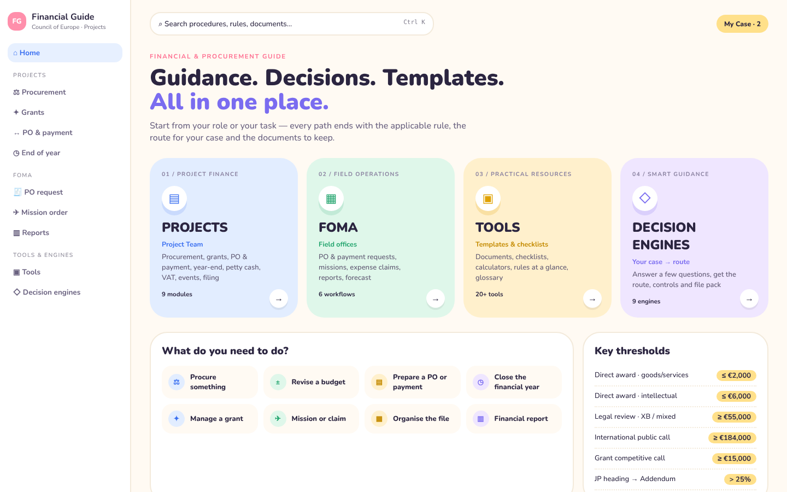

Financial Guide — home page design options
Same content, six visual directions. Click an option to open it full size.

Institutional and calm: navy sidebar, white canvas, gold accents, serif headlines. Closest to an official Council of Europe tool.

Vivid and modern: colourful aurora background, frosted-glass cards, soft glow. The spirit of the original v14, done cleanly.

Confident and colourful: bento tiles of different sizes in solid colours, big type. Very visual, every area instantly recognisable.

Dark control-room dashboard: deep background, neon accents, data-dense. Strong for analysis and decision engines.

Magazine-like: large typography, generous white space, black and white with one red accent. Reads like a premium handbook.

Friendly and approachable: rounded shapes, pastel colour blocks, playful icons. Lowest barrier for new staff and field offices.